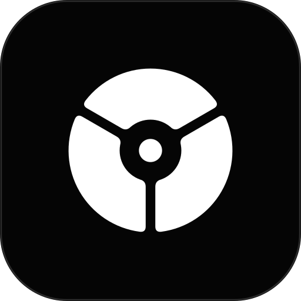

Section 12 // Master Assets
Canonical Master Vector Catalog
Single source of truth production assets in standalone SVG format. Exactly 10 canonical files covering dark and light mode architectures.
A model-agnostic, mathematics-driven identity system engineered exclusively for software products. Built upon Euclidean sacred geometry, W3C DTCG 3-tier tokens, psychomotor confirmation windows, client-side synthesized audio haptics, and zero-database sovereign architecture.
Why the platform is named Watq: authentic Sundanese etymology (Watek), zero-acronym architectural decoupling, and modern phonetic compression.
Watq adalah sebuah kata tunggal murni yang berdiri sendiri (Sovereign Wordmark), BUKAN merupakan akronim atau singkatan kata panjang. Sebagaimana jenama teknologi kelas dunia seperti Figma, Stripe, Vercel, Flickr, dan Slack, nama Watq hadir otonom sebagai kata benda murni yang berakar langsung dari kosakata bahasa Sunda resmi: "Watek" (karakter asli bawaan lahir).
Kata dasar 5 huruf tanpa imbuhan bermakna tabiat, watak, atau sifat batin fitrah bawaan lahir.
Tidak dikunci ke 1 model tes kognitif. Siap menampung Jungian 16, Big Five (5 dimensi), DISC, & Enneagram.
Huruf 'Q' mengunci intonasi glottal Sunda sekaligus memberikan status Fanciful Mark legal WIPO.
The brand name Watq originates from the Sundanese word "Watek", which signifies innate character, inborn disposition, authentic temperament, and primordial human nature (*watak / tabiat asli bawaan lahir*). It embodies the authentic self before external societal masks (*persona*) distort human cognitive expression.
Following the celebrated tradition of modern technology naming conventions (such as Flickr from Flicker, Tumblr from Tumbler, and Scribd from Scribed), the Sundanese word Watek is phonetically compressed into Watq (logotype: WATQ):
• Zero Generic Suffixes: Rejects trendy, disposable naming clichés like -ly, -io, or generic prefixes.
• Preserved Pronunciation: Modernized into 4 monolithic letters (Watq), yet the vocal pronunciation remains faithful to the original root: pronounced "Watek" (/wɑtək/ or /wɑtk/).
• Terminal 'Q' Orthography: Captures the crisp Sundanese glottal cadence while engineering a sleek, monolithic 4-character software wordmark.
• Strategic Authority & Trademark Supremacy: Rejects descriptive names (PersonalityTest, PsychoQuiz) which fail trademark registration as merely descriptive. Watq is classified legally as a Fanciful Mark (highest tier of intellectual property protectability), enjoying instant monosyllabic punch, 100% dictionary uniqueness, and zero SEO search collision.
Audited against authoritative sources: Kamus Basa Sunda R.A. Danadibrata, R. Satjadibrata, and Balai Bahasa Provinsi Jawa Barat (Kemendikbudristek).
| Root Word | Letters | Official Lexical Definition | Psychological Scope Alignment | Status |
|---|---|---|---|---|
| WATEK | 5 Letters | Tabéat, watak, atawa sifat batin jelema nu aya di jero diri nu bisa mangaruhan sakabéh pikiran jeung panggawéna; karakter bawaan lahir. | 100% exact equivalent to Personality & Cognitive Typology. | SELECTED |
| SIPAT | 5 Letters | Kaadaan, rupa, ciri khas lahiriah atawa batiniah nu napel dina hiji hal/makhluk. | Generic physical/material traits (e.g. sipat cai, sipat batu). | TOO BROAD |
| BUDI | 4 Letters | Perangai, laku lampah, akal karsa, tata krama, atawa budi pekerti. | Ethical etiquette & manners (budi parangi), not cognitive traits. | ETHICAL BIAS |
| SURTI | 5 Letters | Paham, ngarti, awas, tanggap kana isarah/perasaan batur tanpa kudu diucapkeun langsung. | Intuitive empathy & social sensitivity, lacks thinking/judging axes. | PARTIAL |
| SIDIK | 5 Letters | Tétéla, nyata, jelas, kabukti benerna sabada ditalungtik sacara jero tur taliti. | Action of investigating/decoding, describes method rather than self. | ACTION ONLY |
| TEGES | 5 Letters | Jelas, terang benderang, nyata, atawa harti nu saenyana (hakikat). | Semantic clarity and truth, lacks internal psychometric dimensions. | CLARITY ONLY |
How the name Watq was engineered by synthesizing global software naming conventions while rejecting artificial acronymic lock-in.
| No | Pattern Mechanism | Global Tech Examples | Architectural Evaluation for Watq | Verdict |
|---|---|---|---|---|
| 01 | Vowel Elision Removes internal vowel |
Flickr, Tumblr, Scribd | Compresses Sundanese Watek ➔ Watq (/wɑtək/). Preserves authentic vocal pronunciation while creating modern software aesthetic. | SELECTED |
| 02 | Terminal Glottal 'Q' Substitutes final consonant |
Compaq, Xerox, Lyft | Replaces standard 'k' with 'Q', perfectly capturing Sundanese glottal stop while providing crisp high-tech authority. | SELECTED |
| 03 | Acronymic Expansion Expands to long sentences |
SWIFT, SATA, SPARC | Forced backronyms cause tight-coupling to 1 single model (e.g. 4 axes). Rejection guarantees 100% model-agnostic freedom. | REJECTED |
| 04 | Morphemic Portmanteau Blends two words |
Instagram, Pinterest | Blended words dilute the purity of the un-affixed cultural root word. | REJECTED |
| 05 | Neologism / Fanciful Mark Coined wordmark |
Kodak, Rolex, Exxon | Achieves highest tier of trademark defensibility under WIPO Nice Class 9/42, with zero SEO search collision. | SELECTED |
| 06 | Monosyllabic Footprint 1-2 punchy syllables |
Slack, Stripe, Figma, Vercel | 4 monolithic characters, developer-ergonomic, Web URL-ready (watq.mafrilearth.com), universally pronounceable. |
SELECTED |
To dismantle any perception of an acronym, the platform enforces strict context-aware casing rules matching premier software brands (e.g. Flickr, Figma, Vercel):
| Context Surface | Casing Standard | Cognitive Rationale & Operational Rule |
|---|---|---|
| 1. Editorial & Prose Human Reading Space |
Watq Title Case |
Mandatory in all documentation, UI articles, body text, and announcements. Visually signals a pure proper noun, destroying any assumption of an acronym. |
| 2. Visual Logotype Graphic Lockup Space |
WATQ All-Caps |
Permitted exclusively in geometric vector marks, badges, and horizontal headers for optical DIN 1450 balance and structural stability. |
| 3. Web URL & Package Web Protocol & Modules |
watqLowercase |
All-lowercase in web URLs (watq.mafrilearth.com), route paths (/assess, /result), and npm packages (@watq/web). |
Watq is not a disposable quiz or a transient test. It is an Individual-First Personal Cognitive Operating Manual—engineered to decode personal thinking styles, stress recovery habits, and vocational trajectories first, with disciplined, phased modular scalability for relational and team dynamics. Click any pillar below to inspect its operational scope:
High-speed, distraction-free assessment runners (Jung 16, Big Five, DISC) running 100% client-side with zero latency and zero-database privacy.
Multidimensional polarity visualization, decision-making style, stress overload warning signs, and personalized mental recovery routines.
Algorithmic alignment with UNESCO ISCED-F 2013 disciplines & ILO ISCO-08 occupational standards—empowering students and professionals to navigate career paths matching their wiring.
Clean, aesthetic personal summary badge easily downloadable or attachable to CVs, LinkedIn, and personal engineering portfolios.
Lightweight 1-on-1 collaboration simulator analyzing communication harmony, potential friction points, and constructive feedback strategies between two profiles.
Collective cognitive diversity heatmaps for organizations and embeddable developer SDKs for EdTech/HRTech integrations.
High-speed, distraction-free assessment runners (Jung 16, Big Five, DISC) running 100% client-side with zero latency and zero-database privacy. Built with modular catalog drivers supporting Carl Jung 1921 16 Cognitive Types reference runner, Big Five (OCEAN), Enneagram 9-types, DISC, Holland RIASEC, and VIA Character Strengths.
Interactive geometric blueprint of the master monolithic insignia. Built with Euclidean compass precision, 120° rotational symmetry, and G2 continuous curvature.
Master Canvas: 500 × 500px │ Center Origin: (250.0, 250.0) │ G2 Filleted Keystones: rf = 12.0px │ Optical Corridor: 20.0px constant
Standardizing the Title Case Watq horizontal lockup, standalone mark, and typography across dark obsidian and stark white light modes.

Used across primary dark surfaces, navigation headers, and hero decks. Features 82px Universal Lens mark, 1.5px divider, 52px Space Grotesk Bold Watq title, and 11px Inter Semibold uppercase tagline.
Preserved for high-luminance viewports, printable PDF diagnostic summaries, and white executive briefs. Pure monochrome black typography (#000000) with calibrated slate tagline (#636366).
Pure Title Case Watq rendered in Space Grotesk Bold 700 with optical tracking (-0.04em). Zero abbreviation clutter, perfect for editorial titles and footer signatures.
Light background variant of the standalone wordmark. Used in documentation, editorial articles, and paper printing with 100% black ink (#000000).
Maintain an unobstructed isolation zone of at least 1X on all 4 perimeter borders. No text, button edges, or illustrations may enter this corridor.
At screen resolutions below 28px height, the tagline and divider must be dropped, transitioning to the standalone 16px pixel-snapped favicon mark.
On physical stationery, conference badges, and merchandise, maintain a minimum physical height of 12mm to guarantee legibility of the filleted G2 keystones.
To protect the optical gravity and sovereign isolation of the mark, mandatory 1X clearance boundaries and hardware-calibrated minimum rendering thresholds are strictly enforced.
The isolation unit 1X is mathematically coupled to the diameter of the central core singularity (2r_c = 48px in master coordinate space). No external UI controls, typographic elements, or view borders may violate this boundary.
Web-first rasterization from 16px pixel-snapped browser tab favicons to responsive web navigation bars, 512px Web PWA manifest icons, and dynamic state loaders.
High-contrast white vectors with a calibrated 20px optical corridor preventing facet merging at retina browser tab densities.
Inline reactive SVG utilizing currentColor to seamlessly respond to web dark/light themes.

Standard Progressive Web App icon defined in manifest.webmanifest over deep Titanium Slate background (#12151D).
Pulsing continuous state loader indicating asynchronous scoring engine calculation in browser runtime.
1240px max-width container, full bento grid, 4-polarity radar canvas with hover telemetry.
Fluid floating navigation, balanced 2-column bento layouts, full keyboard bindings (1–5).
Robert Bringhurst 65 CPL focus container for /assess, 0 header distraction.
Touch target heights ≥ 48px, stacked 5-point Likert tiles, and bottom-anchored actions.
Grounded in DIN 1450 legibility laws and Robert Bringhurst's typographic measure. Three distinct typefaces engineered for specific cognitive functions: display impact, high-speed reading, and tabular data telemetry.
Designed by Florian Karsten. Cybernetic-brutalist proportions calibrated for archetype titles, 4-letter cognitive codes, and hero route headers.
Designed by Indonesian typographer Gumpita Rahayu (Tokotype). Resonates culturally with the Sundanese root Watek while providing world-class neo-grotesk readability.
"Human personality is an intricate cognitive architecture rather than a static label. Watq decodes innate behavioral polarities."
Monospaced tabular numbers and technical metadata. Enforces zero optical jitter during live score calculation and keyboard keycap indications.
| Token | Font Size / Line Height | Font Family & Weight | Tracking | Application Surface |
|---|---|---|---|---|
text-h1 |
36px / 44px | Space Grotesk Bold 700 | -0.025em | Primary page hero headings (/assess, /result) |
text-h2 |
24px / 32px | Space Grotesk SemiBold 600 | -0.015em | Bento section headers, archetype result titles |
text-question |
20px / 30px | Plus Jakarta Sans Medium 500 | -0.010em | Assessment item prompts (65 CPL focus corridor) |
text-body |
16px / 24px | Plus Jakarta Sans Regular 400 | 0.000em | Archetype narratives, vocational guidance descriptions |
text-caption |
14px / 20px | Plus Jakarta Sans Medium 500 | +0.010em | Likert scale labels, button action labels |
text-mono-data |
12px / 16px | JetBrains Mono Medium 500 | +0.040em | Tabular scores, session UUID hashes, keyboard keycaps |
Decoupled token layers conforming to the W3C Design Tokens Community Group specification. Raw Primitives ➔ 60-30-10 Semantics ➔ Scoped Components.
:root {
/* TIER 1: PRIMITIVE TOKENS */
--primitive-basalt-950: #08090C;
--primitive-slate-900: #12151D;
--primitive-slate-800: #181C26;
--primitive-citron-500: #D4F024;
--primitive-citron-400: #E2FE52;
--primitive-white: #FFFFFF;
--primitive-cobalt-500: #2E68FF;
--primitive-amber-500: #FF7A00;
--primitive-emerald-500: #10B981;
--primitive-rose-500: #F43F5E;
/* TIER 2: SEMANTIC TOKENS (60-30-10 HIERARCHY) */
--surface-canvas: var(--primitive-basalt-950); /* 60%: Base Deep Obsidian */
--surface-card: var(--primitive-slate-900); /* 30%: Structural Containers */
--surface-elevated: var(--primitive-slate-800); /* Popovers & Modals */
--interactive-accent: var(--primitive-citron-500); /* 10%: Primary CTA & Focus */
--text-primary: var(--primitive-white); /* 19.09:1 AAA */
--text-secondary: #94A3B8; /* 7.42:1 AAA */
/* TIER 3: COMPONENT TOKENS */
--btn-primary-bg: var(--interactive-accent);
--btn-primary-fg: var(--surface-canvas);
--runner-max-width: 680px;
--likert-tile-min-height: 52px;
--card-outer-radius: 20px;
--card-inner-radius: 14px;
}Strict mathematical spatial rhythm eliminating ad-hoc margins. Every dimensional spacing token is an integer multiple of 8px (with a 4px half-step for micro-badges and icon offsets).
Deepest viewport mineral ground (Z = 0). Zero glare.
Structural cards, assessment runner enclosure (Z = 1).
Active tiles, hover state transitions (Z = 2).
Sticky navigation header, drawer sheets (Z = 50).
Archetype detail modals, telemetry toasts (Z = 100).
Test production interactive primitives live: Button-in-Button "Island" CTA, Double-Bezel hardware card, and the 5-point Likert tile with physical keyboard listeners (1–5).
translate(2px, -2px)) and acoustic trigger.
"I systematically map complex problems into visual architectural structures before writing code."
All cards emulate machined physical instruments. An outer 8px frame with subtle 1px border surrounds an inner core with an inset specular highlight (box-shadow: inset 0 1px 1px rgba(255, 255, 255, 0.08)), imparting physical tactile depth without muddy drop shadows.
Graceful zero-database edge-case handling. Clean mathematical telemetry, zero raw stack-trace pollution, and deterministic session recovery.
The requested diagnostic route does not exist. Seamlessly redirects back to root without session data loss.
Cryptographic Web Crypto hash mismatch. Offers one-click cryptographic reset or telemetry export.
Network disconnected. Full 24-item runner and scoring computation execute client-side with 0 packet loss.
Accessing /result without completed session renders focused CTA guiding user directly to assessment start.
Every interactive element across the platform must support all 6 canonical states without layout shifts or contrast degradation.
Standard resting appearance with baseline contrast.
Brightness lifts with subtle citron glow aura.
2px solid offset ring strictly on TAB key navigation.
Psychomotor compression scale(0.98) simulates tactile click.
aria-disabled="true" with pointer-events suppressed.
Inline spinning glyph with aria-busy="true".
Strict rules to prevent brand dilution, facet deformation, and legibility breakdown across all digital surfaces.
Do not rotate or tilt the insignia. Facet 1 (Cognition) must always remain upright at the vertical apex (90°).
Do not add blurry raster drop shadows. The insignia is a monolithic precision instrument that sits flat on calibrated surfaces.
Always render with equal 20px optical negative clearance and pristine vector fill in approved monochrome or Citron.
Click any swatch card below to copy its HEX value directly to your clipboard.
The Watq color token system decouples mathematical primitives from semantic roles. The identity functions seamlessly across both Dark Mode (optimized for psychomotor focus tunnel and zero glare) and Light Mode (optimized for high-clarity editorial research printing).
| Semantic Role (60-30-10) | Dark Mode Token (Focus Tunnel) | Light Mode Token (Editorial Spec) | WCAG 2.2 Status | Optical Implementation Rule |
|---|---|---|---|---|
| 60% Canvas | #08090C (Cold Basalt) |
#F8F9FA (Alabaster Ceramic) |
PASS AAA | Subdued non-glare surface preventing pupil constriction. |
| 30% Structural Container | #12151D (Titanium Slate) |
#FFFFFF (Pure Card White) |
PASS AAA | High-density structural card enclosing question items. |
| 10% Kinetic Accent | #D4F024 (Radioactive Citron) |
#D4F024 (Inverted Pill) |
15.67 : 1 AAA | In Light Mode, Citron is strictly deployed as an enclosed pill with Deep Basalt text inside. |
| Primary Text Ink | #F8FAFC (Polar Snow) |
#08090C (Deep Basalt Ink) |
19.09 : 1 AAA | Uncompromising legibility exceeding DIN 1450 standard. |
WCAG 2.2 AAA mathematical contrast calculations governing all UI text, button containers, and background surfaces.
| Foreground Element | Background Surface | Calculated Ratio | WCAG 2.2 Status | Permitted UI Usage |
|---|---|---|---|---|
| Stark White (#FFFFFF) | Cold Basalt (#08090C) | 19.09 : 1 | PASS AAA | Hero headings, body text, primary titles. |
| Radioactive Citron (#D4F024) | Cold Basalt (#08090C) | 15.67 : 1 | PASS AAA | Interactive focus rings, active badges, metric callouts. |
| Cold Basalt (#08090C) | Radioactive Citron (#D4F024) | 15.67 : 1 | PASS AAA | Primary button text inside Citron pill containers. |
| Muted Slate (#94A3B8) | Cold Basalt (#08090C) | 7.42 : 1 | PASS AAA | Secondary descriptions, metadata timestamps. |
| Radioactive Citron (#D4F024) | Stark White (#FFFFFF) | 1.22 : 1 | FAIL FORBIDDEN | STRICTLY PROHIBITED. Severe illegibility. |
Interactive live simulator testing the 4 Cognitive Polarity Axes under common color vision deficiencies. Redundancy guarantees that color is never the sole conveyer of meaning.
Hardware-scaled 1200 x 630px social graph card preview rendered across Twitter/X, LinkedIn, Slack, Discord, and WhatsApp links.
Grounded in scientific dignity. Strict distinction between objective cognitive distribution and unscientific pop-psychology clichés.
| Forbidden Pop-Psychology Cliché | Approved Watq Scientific Standard | Cognitive Rationale |
|---|---|---|
| ❌ "Take our fun, magical quiz!" | ✅ "Initialize 24-item cognitive assessment." | Preserves psychometric validity and user seriousness. |
| ❌ "Find your soulmate / horoscope match!" | ✅ "Explore interpersonal communication dynamics." | Watq is a cognitive lens, not an astrological dating app. |
| ❌ "Your personality is 100% fixed forever." | ✅ "Baseline cognitive polarity preferences." | Acknowledges neuroplasticity and situational adaptation. |
| ❌ "You failed / Wrong answer selected." | ✅ "Reverse-keyed polarity distribution." | Cognitive traits have no moral or performance correctness. |
| ❌ "Good luck on your magical journey!" | ✅ "Review your Personal Cognitive Operating Manual." | Focuses on concrete vocational utility and stress recovery. |
Client-side synthesized sine wave frequencies for the 5-point Likert scale with live visual oscilloscope feedback. Zero sound asset payload.
Pure web production engineering contracts for Next.js 16 App Router, 680px Focused Runner Layout, Web Storage Session State Machine, and Web Audio API Synthesis.
// Production React / Next.js 16 Component (src/components/brand/WatqLogo.tsx)
import { WatqPrismMark, WatqLogotype } from '@/components/brand/WatqLogo';
import Link from 'next/link';
export function NavigationHeader() {
return (
<header className="h-16 border-b border-white/[0.08] bg-[#08090C]/90 backdrop-blur-md sticky top-0 z-50">
<div className="max-w-6xl mx-auto px-6 h-full flex items-center justify-between">
<Link href="/" className="flex items-center gap-3 group focus:outline-none focus-visible:ring-2 focus-visible:ring-[#D4F024]">
<WatqPrismMark size={32} className="text-[#D4F024] group-hover:drop-shadow-[0_0_12px_rgba(212,240,36,0.5)] transition-all duration-200" />
<WatqLogotype height={20} className="text-white" />
</Link>
<nav className="flex items-center gap-4 text-xs font-mono text-[#94A3B8]">
<span className="px-2 py-0.5 rounded border border-white/10 bg-white/[0.03]">v1.0.0</span>
<span className="text-[#D4F024]">• 100% Client Web Engine</span>
</nav>
</div>
</header>
);
}Single source of truth production assets in standalone SVG format. Exactly 10 canonical files covering dark and light mode architectures.